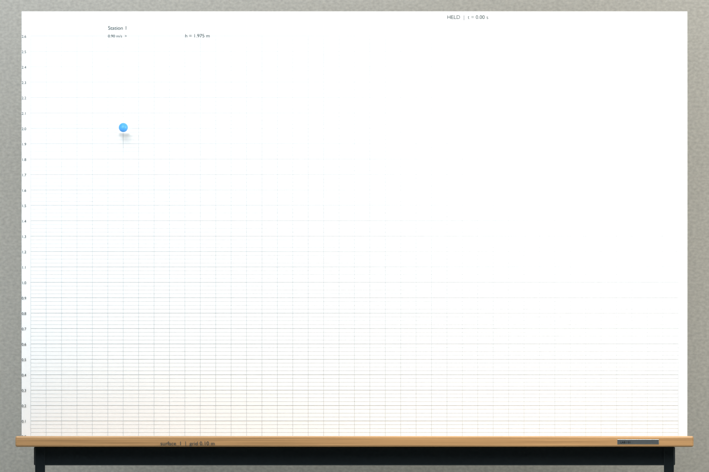
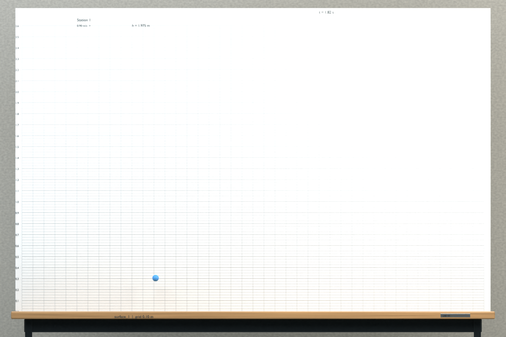

The context image shows the calibrated specimen held immediately before horizontal launch. Use the prior experimental evidence for this same specimen, surface and invisible medium. Read the initial bottom clearance and horizontal launch velocity from the image. Initial vertical velocity is zero; the holder retracts instantly without any extra impulse. Which image shows the specimen 1.82 seconds after launch? Gravity, specimen mass/radius and surface restitution retain their experimental calibration values. The same invisible, fixed smooth function b(z) exerts F_drag = -b(z) * velocity in ALL velocity components, where z is sphere-centre height above the impact surface. Infer the height-dependent drag from the experiments. At each impact the normal velocity reverses with the calibrated restitution; horizontal velocity is continuous at impact but is damped by the medium. There is no buoyancy, spin coupling or tangential contact friction. Track all impacts before the requested time. The major grid spacing is 0.10 m; minor horizontal lines are 0.025 m apart. All choices have the same elapsed time, camera and scale. The drag distribution is not drawn.

